One matrix.
Four bits per weight.Одна матрица.
Четыре бита на вес.
How can we preserve its outputs on typical inputs?
Как сохранить её выходы на типичных входах?

Quantization trades representation error and kernel constraints for capacity. Whether that trade is good depends on the workload.
Квантование (quantization) меняет ошибку представления и ограничения ядра на ёмкость. Хорош ли такой обмен — зависит от нагрузки.
A smaller model is a proposal, not a result
Уменьшенная модель — предложение, а не результат
Our application · synthetic support-ticket routerНаше приложение · синтетический роутер тикетов поддержкиThe required answerТребуемый ответ
“I was charged twice for my monthly subscription. Please refund the duplicate.”
«С меня дважды списали деньги за месячную подписку. Верните лишнее списание.»
Exactly billing, access or bug.
Ровно billing, access или bug.
The proposed changeПредлагаемая правка
Keep Qwen2.5-0.5B-Instruct. Replace FP16 weights with a bitsandbytes NF4 path.
Оставляем Qwen2.5-0.5B-Instruct. FP16-веса меняем на путь bitsandbytes NF4.
Will memory, time and answers improve together?
Улучшатся ли память, время и ответы одновременно?
Three things you must do yourself
Три вещи, которые вы делаете сами
The assessed coreОцениваемое ядроOne investigation, four turns
Одно исследование, четыре хода
Mechanism first · the GPU experiment completes the explanationСначала механизм · GPU-эксперимент завершает объяснениеReconstructВосстановить
Preserve the output of one matrix.
Сохранить выход одной матрицы.
Locate the intervention before looking at a histogram
Найдите точку вмешательства до гистограммы
Pinned model architectureЗакреплённая архитектура модели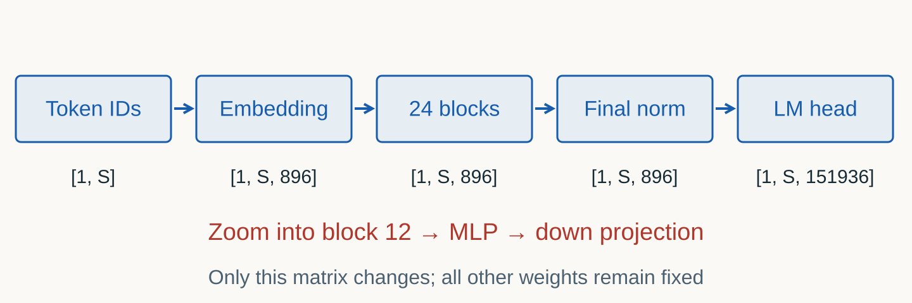
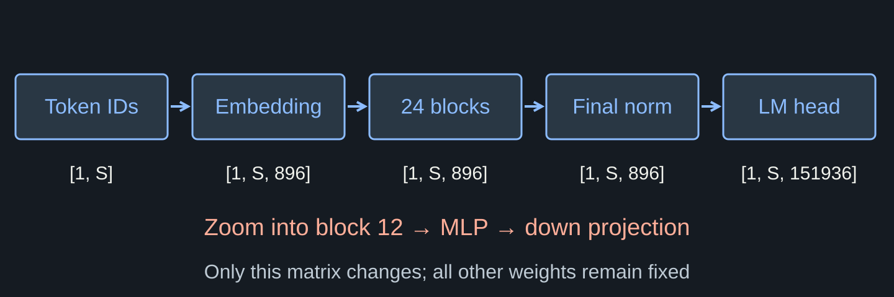
Two residual additions in one decoder blockДва остаточных сложения в одном декодер-блоке
Qwen2 block · step with →Блок Qwen2 · шаги — кнопкой →Each of S token positions carries 896 values. Preserve X for the first identity bypass.
Каждая из S позиций токенов несёт 896 значений. X сохраняем для первого тождественного обхода.
This starts a branch. The saved X remains unchanged.
Здесь начинается ветка. Сохранённый X остаётся неизменным.
A is the per-head attention output. The branch mixes allowed positions, then projects their features.
A — выход внимания на одну голову. Ветка смешивает разрешённые позиции, затем проецирует их признаки.
Both inputs have shape [1,S,896]. The upper skip edge carries X unchanged.
Оба входа имеют форму [1,S,896]. Верхнее skip-ребро несёт X без изменений.
The second branch and its bypass both start after the first addition.
Вторая ветка и её обход начинаются после первого сложения.
\(M=\operatorname{down}(\operatorname{SiLU}(g)\odot u)\). Elementwise product; each position uses widths 896, 4864, 896.
\(M=\operatorname{down}(\operatorname{SiLU}(g)\odot u)\). Поэлементное произведение; каждая позиция использует ширины 896, 4864, 896.
The lower skip edge carries \(X_1\). \(X_2\) enters the next separately parameterized block.
Нижнее skip-ребро несёт \(X_1\). \(X_2\) входит в следующий блок с отдельными параметрами.
The measured matrix is inside a gated MLP
Измеряемая матрица — внутри gated-MLP
Pinned Qwen MLP architectureЗакреплённая архитектура MLP Qwen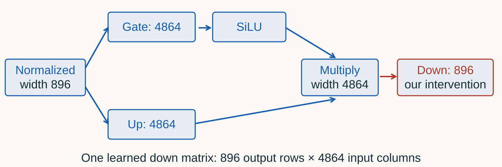
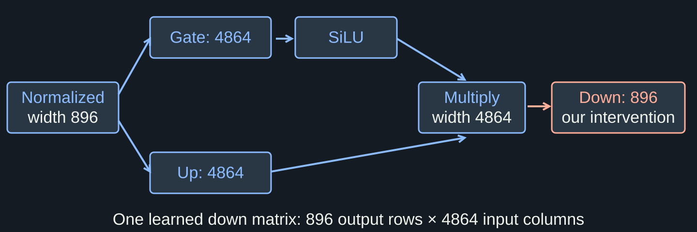
Know which dimension you quantize
Понимайте, какую размерность квантируете
One down projection · no biasОдна проекция down · без смещенияOne matrix, two output features
Одна матрица, два выходных признака
Same invented weights throughout the CPU investigationОдни и те же придуманные веса во всём CPU-исследованииW = [[ .49, .40, .60, 7.00],
[-.31,-.60, .92,-1.40]]
x = [1., 1., 0., 0.]
y = [.89, -.91]Axes are part of the contractОси — часть контракта
W: [out = 2, in = 4].
W: [out = 2, in = 4].
Each row dots with four input features.
Каждая строка скалярно умножается на четыре входных признака.
No bias; no hidden attention axes.
Без смещения; без скрытых осей внимания.
The weight range determines the scale
Диапазон весов задаёт шкалу
Worked CPU arithmetic · not model measurementsРучная арифметика на CPU · не измерения моделиRounding loses distinctions
Округление теряет различия
Global step 1 · reconstructed minus originalГлобальный шаг 1 · восстановленное минус исходное| WeightВес | CodeКод | RestoredВосстановлено | Signed errorЗнаковая ошибка |
|---|---|---|---|
| .49 | 0 | 0 | −.49 |
| .40 | 0 | 0 | −.40 |
| .60 | 1 | 1 | +.40 |
| 7.00 | 7 | 7 | 0 |
One outlier coarsens the entire grid
Один выброс огрубляет всю сетку
Diagnostic counterfactual · not permission to delete a weightКонтрфактика для диагностики · не повод удалять весOriginal matrixИсходная матрица
Maximum magnitude: 7.
Максимальный модуль: 7.
Scale: 1.
Шкала: 1.
.49 → 0.
If 7 were .70Если бы 7 был .70
Maximum magnitude: 1.40.
Максимальный модуль: 1.40.
Scale: .20.
Шкала: .20.
.49 → .40.
One scale maps a distribution onto a few levels
Одна шкала вжимает распределение в несколько уровней
Measured Qwen · CPU FP32 / simulated INT4Измеренный Qwen · CPU FP32 / симуляция INT4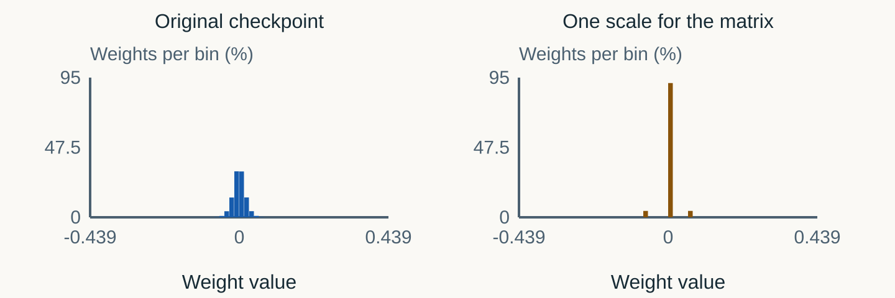
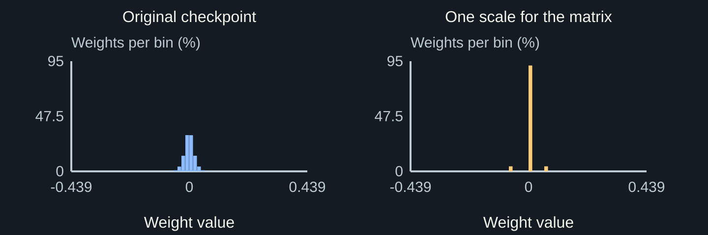
Per-channel means per output row here
Per-channel здесь — по выходной строке
W[out,in] · keep the matrix unchangedW[out,in] · матрицу не меняем| RowСтрока | Original maximumИсходный максимум | Own scaleСвоя шкала |
|---|---|---|
| 0 | 7 | 1 |
| 1 | 1.40 | .20 |
Groups isolate the outlier
Группы изолируют выброс
Group size 2 · contiguous pairs inside each rowРазмер группы 2 · соседние пары внутри строки| GroupГруппа | ScaleШкала | Restored pairВосстановленная пара |
|---|---|---|
| [.49,.40] | .07 | [.49,.42] |
| [.60,7] | 1 | [1,7] |
| [−.31,−.60] | .60 / 7 | [−.342857,−.60] |
| [.92,−1.40] | .20 | [1,−1.40] |
Scale metadata is not free
Метаданные шкалы не бесплатны
Eight weights · ideal FP16 scale payloadВосемь весов · идеальная нагрузка FP16-шкал| GranularityГранулярность | ScalesШкалы | Code + scale bytesКод + байты шкал |
|---|---|---|
| One tensorОдин тензор | 1 | 4 + 2 = 6 |
| One per rowПо одной на строку | 2 | 4 + 4 = 8 |
| Groups of 2Группы по 2 | 4 | 4 + 8 = 12 |
| Groups of 1Группы по 1 | 8 | 4 + 16 = 20 |
Inspect the center without hiding the tails
Смотрите в центр, не пряча хвосты
Measured Qwen · CPU FP32 / simulated INT4Измеренный Qwen · CPU FP32 / симуляция INT4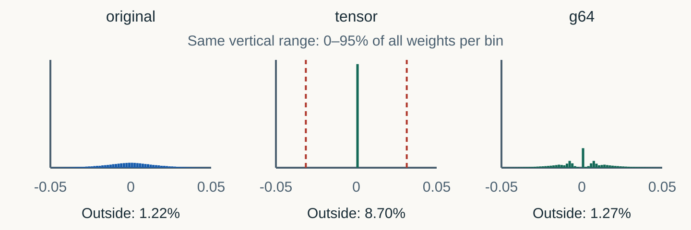
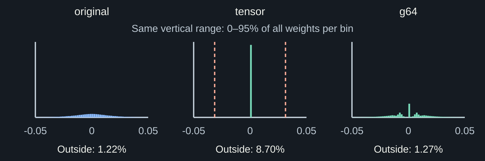
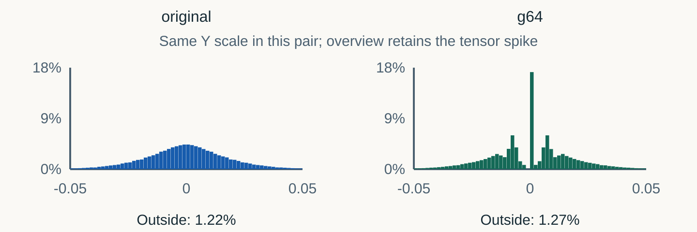

The student's code chooses the groups
Группы выбирает код студента
Two small functions · no student-written medianДве небольшие функции · медиану студент не пишетdef derive_scale(values):
# TODO: range and zero case
raise NotImplementedError
def quantize_groups(W, size=None):
# TODO: tensor or row-local groups
raise NotImplementedErrorRequired comparisonОбязательное сравнение
One tensor → each row → groups 2 → groups 1.
Один тензор → каждая строка → группы 2 → группы 1.
Record scales, bytes and output errors.
Записывайте шкалы, байты и ошибки на выходах.
Keep the same W and inputs.
Держите те же W и входы.
Weight error reaches outputs through inputs
Ошибка весов доходит до выходов через входы
Worked CPU arithmetic · not model measurementsРучная арифметика на CPU · не измерения моделиThe same weights fail differently
Те же веса ломаются по-разному
Same inputs · global versus group size 2Те же входы · глобально против группы 2| InputВход | Global errorГлобальная ошибка | Group-2 errorОшибка группы 2 |
|---|---|---|
| [1,1,0,0] | [−.89,−.09] | [+.02,−.032857] |
| [0,1,0,0] | [−.40,−.40] | [+.02,0] |
| [10,0,0,1] | [−4.90,+3.50] | [≈0,−.328571] |
Calibration makes the objective concrete
Калибровка делает цель конкретной
Inputs choose which output errors matterВходы выбирают, какие ошибки выходов важныLiteral calibration inputБуквальный вход калибровки
“A store sells notebooks for 3 dollars each. Maria buys four notebooks and pays with a twenty-dollar bill. Explain how to calculate her change in one short sentence.”
«В магазине тетради продаются по 3 доллара. Мария покупает четыре тетради и платит двадцатидолларовой купюрой. Объясните одним коротким предложением, как посчитать её сдачу.»
Output preservationСохранение выходов
Evaluate reconstructed outputs on representative layer inputs.
Оценивайте реконструированные выходы на представительных входах слоя.
Held-out instead asks average train speed. Do not select settings from that result.
Held-out вместо этого спрашивает среднюю скорость обучения. Не выбирайте настройки по этому результату.
Twelve prompts, two distinct populations
Двенадцать промптов, две разные популяции
Measured Qwen · split fixed before runningИзмеренный Qwen · разбиение зафиксировано до прогона| PopulationПопуляция | CalibrationКалибровка | Held-outHeld-out |
|---|---|---|
| PromptsПромпты | 6 across six domains6 по шести доменам | 6 new texts, same domains6 новых текстов, те же домены |
| All positionsВсе позиции | 414 | 414 |
| User textТекст пользователя | 240 · template excluded240 · без шаблона | 240 · template excluded240 · без шаблона |
| DomainsДомены | All six domainsВсе шесть доменов | All six domainsВсе шесть доменов |
Each split: math, code, JSON, Russian, support, summary. Exact texts, positions and measurements.
Каждое разбиение: math, code, JSON, Russian, support, summary. Точные тексты, позиции и измерения.
Inspect user-content activations separately from the wrapper
Активации пользовательского текста смотрите отдельно от обёртки
Measured Qwen · user-content-onlyИзмеренный Qwen · только пользовательский текст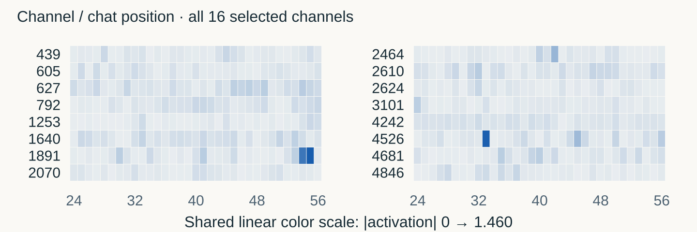
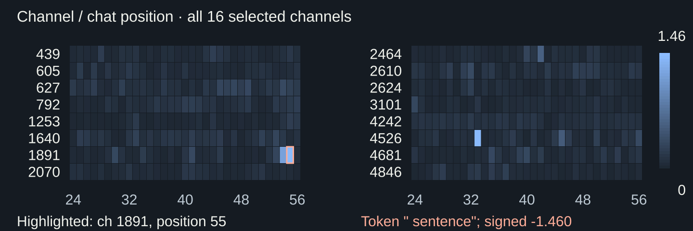
Shared wrapper and user text are different populations
Общая обёртка и текст пользователя — разные популяции
Measured Qwen · calibration onlyИзмеренный Qwen · только калибровка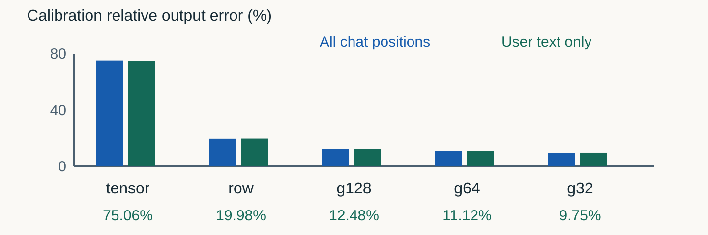
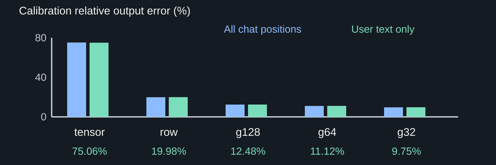
AWQ: equivalent channel rescaling
AWQ: эквивалентное перемасштабирование каналов
Worked CPU arithmetic · not model measurementsРучная арифметика на CPU · не измерения моделиProtect an active input channel, not the largest weight
Защищайте активный входной канал, а не крупнейший вес
Illustrative mechanism · not full AWQ/GPTQИллюстративный механизм · не полный AWQ/GPTQ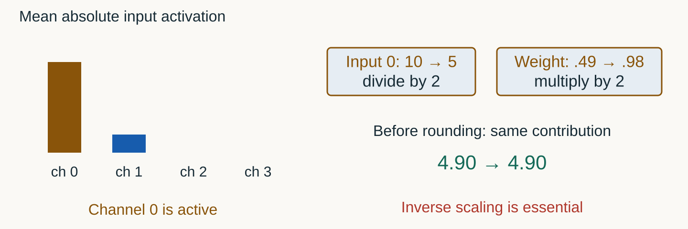
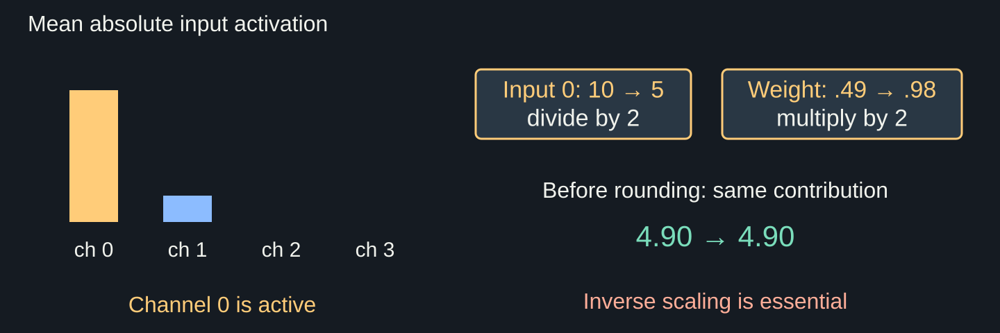
AWQ: rounding now sees .98 instead of .49
AWQ: при округлении видно .98 вместо .49
Same W · calibration inputs now [10,1,0,0] and [0,1,0,0]Та же W · калибровочные входы теперь [10,1,0,0] и [0,1,0,0]Without scalingБез масштабирования
.49 → code 0 → weight 0.
.49 → код 0 → вес 0.
At input 10: error −4.90.
При входе 10: ошибка −4.90.
Channel multiplier 2Множитель канала 2
.49 × 2 = .98 → code 1.
.49 × 2 = .98 → код 1.
Effective weight: 1 / 2 = .50.
Эффективный вес: 1 / 2 = .50.
At input 10: error +.10.
При входе 10: ошибка +.10.
After rounding, equivalent parameterizations differ
После округления эквивалентные параметризации расходятся
Illustrative mechanism · not full AWQ/GPTQИллюстративный механизм · не полный AWQ/GPTQ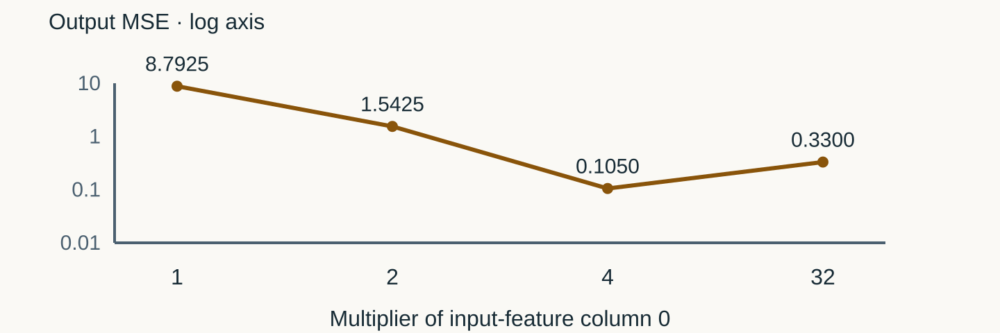
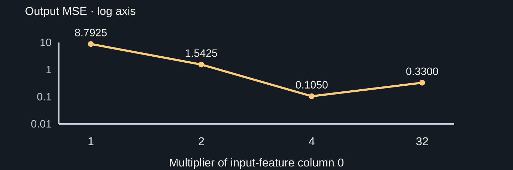
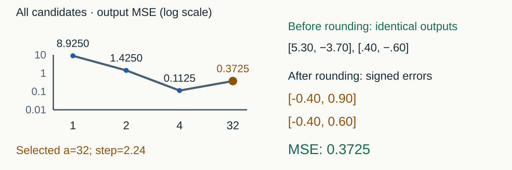
Output-error ellipses prefer a different lattice point
Эллипсы ошибки выхода предпочитают другую точку решётки
Illustrative mechanism · not full AWQ/GPTQИллюстративный механизм · не полный AWQ/GPTQ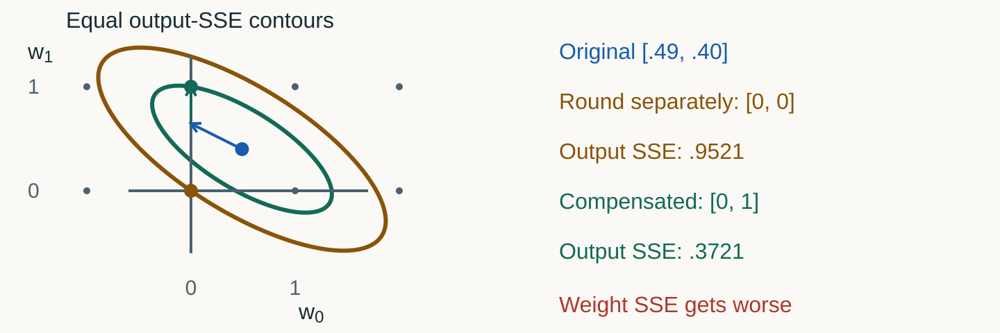
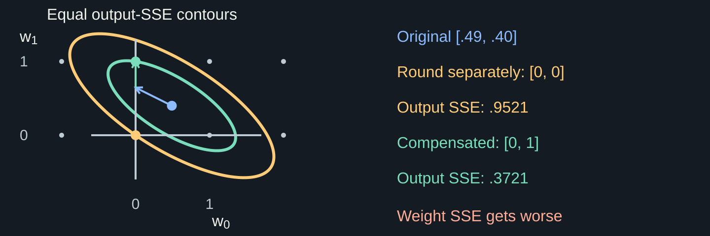
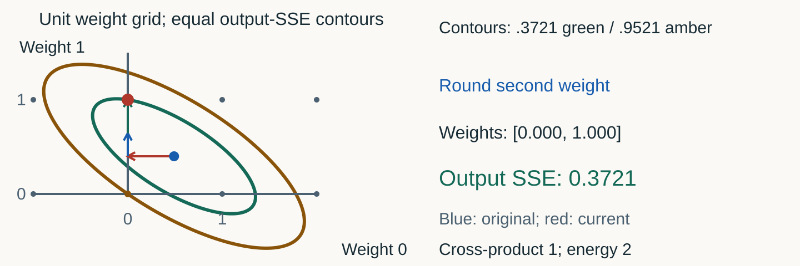
GPTQ: choose the compensation from inputs
GPTQ: компенсацию выбирают входы
Worked CPU arithmetic · not model measurementsРучная арифметика на CPU · не измерения моделиBetter outputs can require worse weights
Лучшие выходы могут требовать худших весов
Same two calibration samples · one output rowТе же две калибровочные пробы · одна выходная строка| QuantityВеличина | Independent roundingНезависимое округление | CompensationКомпенсация |
|---|---|---|
| Final codesИтоговые коды | [0,0] | [0,1] |
| Output errorsОшибки выхода | [−.89,−.40] | [+.11,+.60] |
| Output SSEВыходной SSE | .9521 | .3721 |
| Weight SSESSE весов | .4001 | .6001 |
Observe the objective conflict on real weights
Конфликт целей виден и на реальных весах
Mandatory lab · 64 Qwen output rows · float64 QDQОбязательная лаба · 64 выходные строки Qwen · float64 QDQ| Clipping percentileПерцентиль отсечения | Weight MSE × 1,000,000MSE весов × 1,000,000 | Calibration output errorОшибка выхода на калибровке |
|---|---|---|
| 100 | 71.7970 | 46.06% |
| 99 | 7.2293 · best weights7.2293 · лучшие веса | 20.25% |
| 99.5 | 7.4682 | 19.47% · best outputs19.47% · лучшие выходы |
Narrower steps preserve the center but saturate tails. Measured calibration-only sweep.
Более узкие шаги берегут центр, но насыщают хвосты. Измеренный свип только по калибровке.
Format, algorithm and execution are different
Формат, алгоритм и исполнение — разное
Do not compare unlike categoriesНе сравнивайте разные категории| LayerСлой | QuestionВопрос | ExamplesПримеры |
|---|---|---|
| RepresentationПредставление | What do codes mean?Что означают коды? | Uniform INT4; NF4 |
| SelectionВыбор | How choose weights?Как выбирать веса? | RTN; AWQ; GPTQ |
| ExecutionИсполнение | How compute?Как считать? | Packed GPU kernelsПакованные GPU-ядра |
NF4 spends more reconstruction levels near zero
NF4 тратит больше уровней реконструкции у нуля
Pinned NF4 codebook · illustrative densityЗакреплённая кодовая книга NF4 · иллюстративная плотность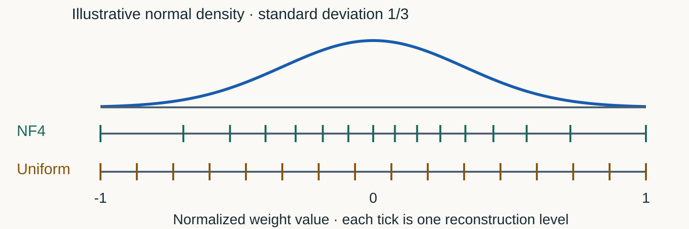
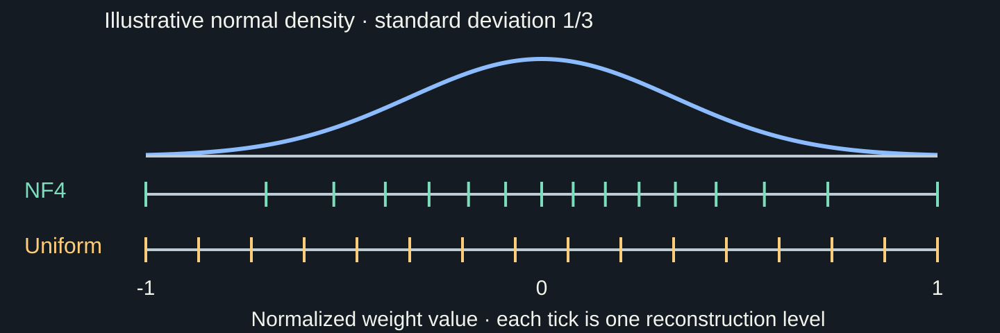
The same NF4 code means different weights in different blocks
Один код NF4 означает разные веса в разных блоках
Illustrative block normalizationИллюстративная нормализация блоков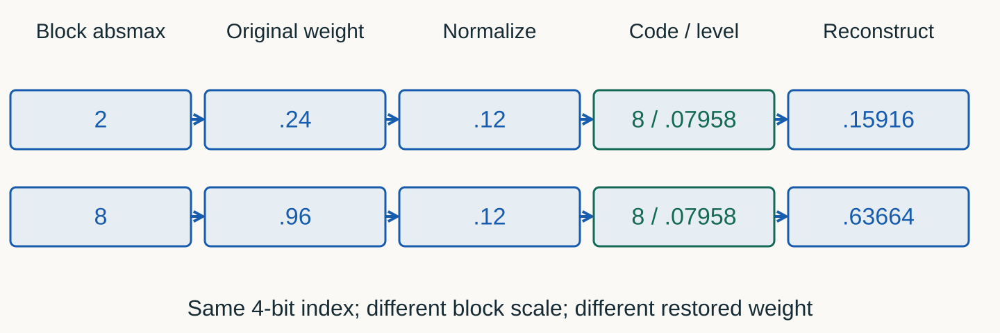
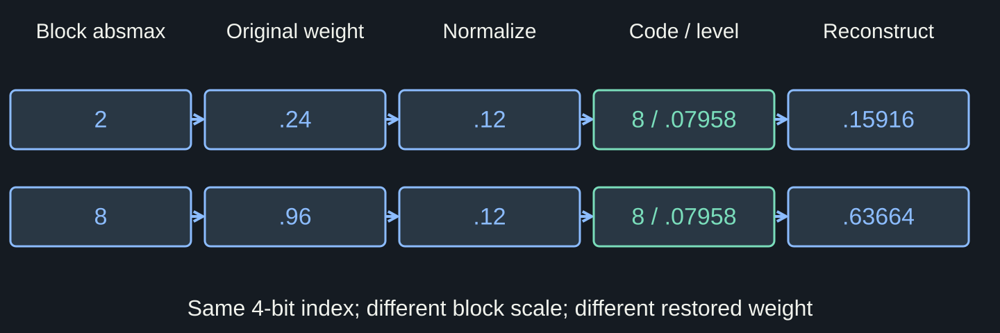
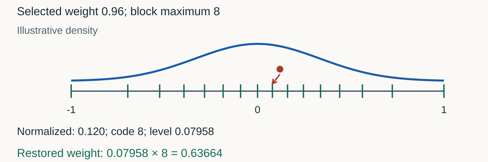
NF4 on actual normalized Qwen blocks
NF4 на реальных нормализованных блоках Qwen
Measured slice · CPU float64Измеренный срез · CPU float64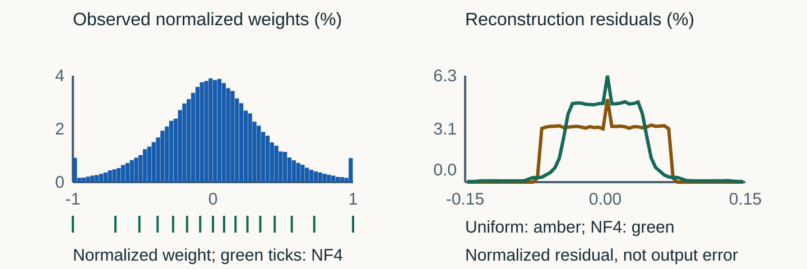
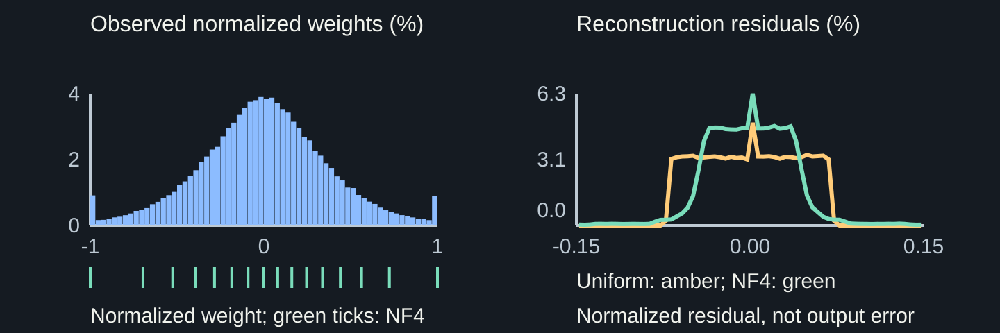
Freeze the choice before held-out
Зафиксируйте выбор до held-out
Full Qwen layer · 4.30 ideal bits/weight budgetПолный слой Qwen · бюджет 4.30 идеального бита на вес| GroupГруппа | Calibration user errorПользовательская ошибка калибровки | Bits per weightБит на вес |
|---|---|---|
| 128 | 12.48% | 4.125 |
| 64 | 11.12% · selected11.12% · выбрано | 4.250 |
| 32 | 9.75% | 4.500 · over budget4.500 · сверх бюджета |
Frozen group 64 → held-out user error 11.17%. Capture. No claim about task accuracy.
Зафиксированная группа 64 → пользовательская ошибка на held-out 11.17%. Захват. Никаких заявлений о точности задачи.
CountПосчитать
A smaller code is not a fourfold reduction of every allocation.
Меньший код — не четырёхкратное уменьшение каждой аллокации.
W4A16 separates storage from arithmetic
W4A16 разделяет хранение и арифметику
Illustrative execution path · actual kernel must be observedИллюстративный путь исполнения · реальное ядро нужно наблюдать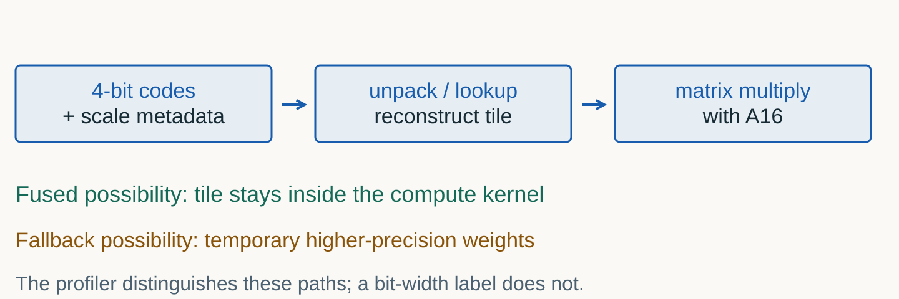
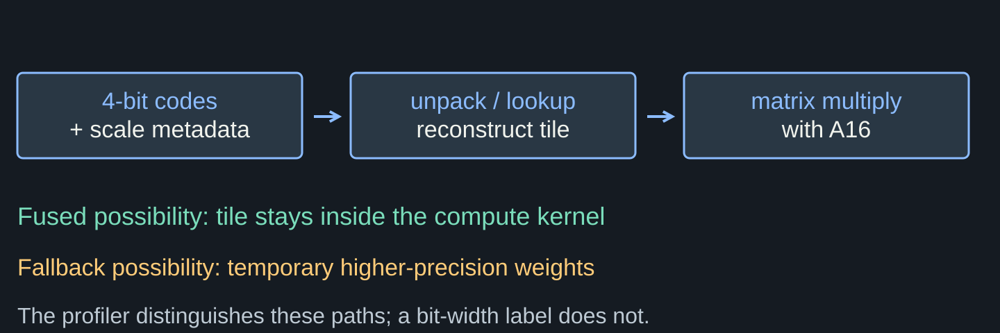
Define the two candidates exactly
Определите двух кандидатов точно
Whole-model A/B · A4 weights are not installedA/B целой модели · A4-веса не установлены| Parameter | FP16 | bitsandbytes NF4 |
|---|---|---|
| Weight storage | FP16 | NF4 · four-bit modules verified |
| Compute | FP16 | FP16 |
| Double quant | Not applicable | Off |
| Input | Same token IDs · batch 1 | Same token IDs · batch 1 |
| Generation | Greedy · SDPA · fixed output count | Same settings and cache policy |
| Runtime | Same GPU, host Torch and package pins | Same GPU, host Torch and package pins |
Count row-local tail scales
Считайте хвостовые шкалы по строкам
Ideal payload · row boundaries matterИдеальная нагрузка · границы строк важныMove payload and headroom together
Двигайте нагрузку и запас вместе
Illustrative 3B budget · not the pilot modelИллюстративный бюджет 3B · не пилотная модель16 GiB device; fill = payload / (16 − reserve − KV). Below 16 bits: codes + FP16 group scales. At 16 bits: BF16 payload, no group scales.
Устройство 16 GiB; заполнение = нагрузка / (16 − резерв − KV). Ниже 16 бит: коды + FP16-шкалы групп. На 16 битах: нагрузка BF16, без шкал групп.
Read the T4 allocator, not a file-size prediction
Читайте аллокатор T4, а не предсказание по размеру файла
Same recorded v6 T4 capture as the timing and quality examplesТа же записанная v6-съёмка T4, что и в примерах таймингов и качества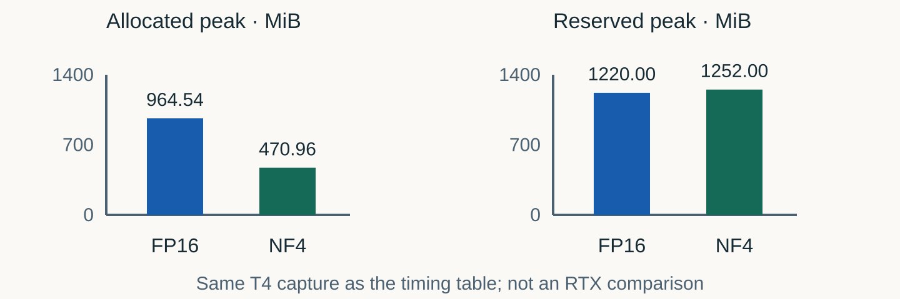
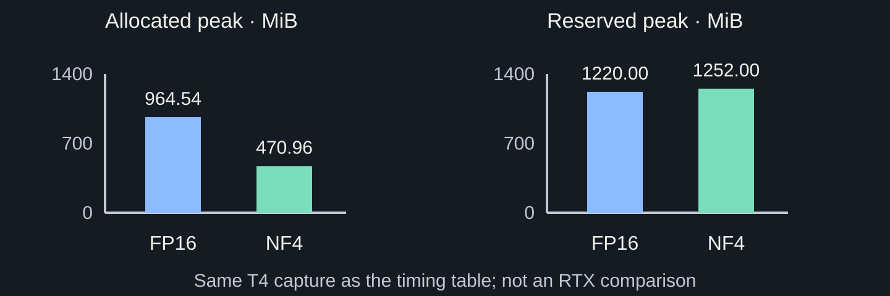
MeasureИзмерить
Keep the work equal and the raw measurements visible.
Работу держите равной, сырые измерения — видимыми.
Use a workload that isolates timing
Нагрузка, изолирующая тайминги
Literal synthetic prompt · not support-service qualityБуквальный синтетический промпт · не качество поддержкиPromptПромпт
Continue the sequence with comma-separated integers and no explanation: 2, 4, 6,
Продолжьте последовательность целыми числами через запятую, без объяснений: 2, 4, 6,
Same rendered chat and input IDs in both paths.
Один и тот же отрендеренный чат и входные ID на обоих путях.
Force equal workПринудительно равная работа
Exactly 24 selected output IDs, then exactly 96.
Ровно 24 выбранных ID на выходе, затем ровно 96.
Even if a model would naturally stop earlier.
Даже если модель остановилась бы раньше естественным образом.
Never score these forced answers as useful tickets.
Эти принудительные ответы никогда не оцениваются как полезные тикеты.
Change one factor; retain every trial
Меняйте один фактор; сохраняйте каждую попытку
The pilot measurement matrixМатрица измерений пилота| FieldПоле | Required settingТребуемая настройка |
|---|---|
| FormatsФорматы | FP16 and NF4 · sequential loadsFP16 и NF4 · последовательная загрузка |
| Fixed output lengthsФиксированные длины выхода | 24 and 9624 и 96 |
| Repeated timingsПовторные тайминги | 5 per length × 2 lengths × 2 formats = 205 на длину × 2 длины × 2 формата = 20 |
| WarmupПрогрев | 1 excluded run for each format and length1 исключаемый прогон на каждый формат и длину |
| OrderПорядок | Alternate length order; record fixed format orderЧередуйте порядок длин; порядок форматов фиксирован |
Do not stop the clock before the GPU finishes
Не останавливайте часы до завершения GPU
Inspect this boundary in the provided runnerЭту границу найдите в приложенном раннереtorch.cuda.synchronize()
started = time.perf_counter()
output = model.generate(**fixed)
torch.cuda.synchronize()
seconds = time.perf_counter()-startedIncludedВключено
Generation and host dispatch.
Генерация и хостовая диспетчеризация.
ExcludedИсключено
Loading, tokenization and input transfer.
Загрузка, токенизация и перенос входа.
Profiler runs separately.
Профайлер запускается отдельно.
Timing summaries are provided and tested
Сводки таймингов приложены и покрыты тестами
Seconds in · milliseconds outСекунды на входе · миллисекунды на выходеtest_summary(summarize_seconds)
samples = [.103, .100, .101]
result = summarize_seconds(samples)
# median_ms: 101; minimum_ms: 100
# maximum_ms: 103Check the conversionПроверьте конверсию
For [0.103, 0.100, 0.101] seconds, median = 101 ms.
Для [0.103, 0.100, 0.101] секунд медиана = 101 ms.
Test odd and even trial counts.
Проверьте нечётные и чётные числа попыток.
These are invented test values.
Это придуманные тестовые значения.
Your workload edit: 24 → 96
Ваша правка нагрузки: 24 → 96
Prediction, one change, observationПредсказание, одна правка, наблюдениеLENGTHS = [24, 24]
# Change only the second value.
check_lengths(LENGTHS)
TRIALS = 5Before runningДо запуска
Will the timing ratio remain the same at 96? Why?
Сохранится ли соотношение таймингов на 96? Почему?
Declare acceptable correct/invalid counts for your router scenario.
Заявите допустимые числа верных и неверных ответов для сценария вашего роутера.
After runningПосле запуска
Compare five raw times and apply the frozen screening rule.
Сравните пять сырых времён и примените зафиксированное скрининговое правило.
A profile narrows a question; it is not a verdict
Профиль сужает вопрос; это не вердикт
One separate short profile per formatОдин отдельный короткий профиль на форматLook forИщите
Operator names, CPU versus device time, and conversion-related work.
Имена операторов, время CPU против устройства, работу по конверсии.
Ask whether the suspected path actually appears.
Спросите себя, появляется ли подозреваемый путь вообще.
Do not inferНе выводите
Inclusive operator totals are not disjoint kernel durations.
Инклюзивные суммы операторов — не непересекающиеся длительности ядер.
No device attribution → no kernel explanation.
Нет привязки к устройству → нет объяснения на уровне ядер.
OOM is a failed run, not “profile unavailable”.
OOM — упавший прогон, а не «профиль недоступен».
Timing and quality need different outputs
Таймингам и качеству нужны разные выходы
Return to the literal support ticketВернитесь к буквальному тикету поддержкиNatural generationЕстественная генерация
“I was charged twice for my monthly subscription. Please refund the duplicate.”
«С меня дважды списали деньги за месячную подписку. Верните лишнее списание.»
Expected label: billing.
Ожидаемая метка: billing.
Allow EOS; cap 12 output IDs.
Разрешён EOS; потолок 12 ID на выходе.
Declared parserЗаявленный парсер
Strip only surrounding whitespace.
Срезаются только пробелы по краям.
billing passes.
billing проходит.
Billing and billing. fail this exact contract.
Billing и billing. проваливают этот точный контракт.
DecideРешить
Choose a setting from calibration; test it on new inputs.
Выберите настройку по калибровке; проверьте на новых входах.
Twelve tickets expose a failing baseline
Двенадцать тикетов вскрывают провальную базу
Same paired cases · four synthetic tickets per classТе же парные случаи · по четыре синтетических тикета на класс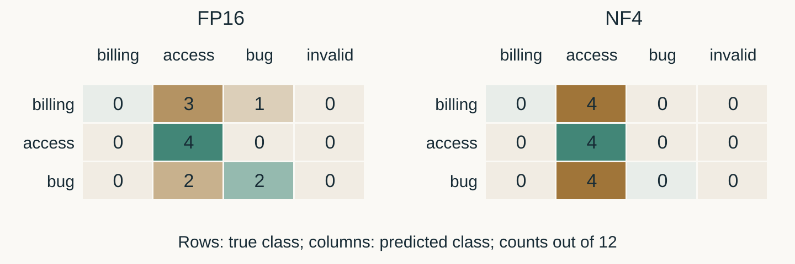
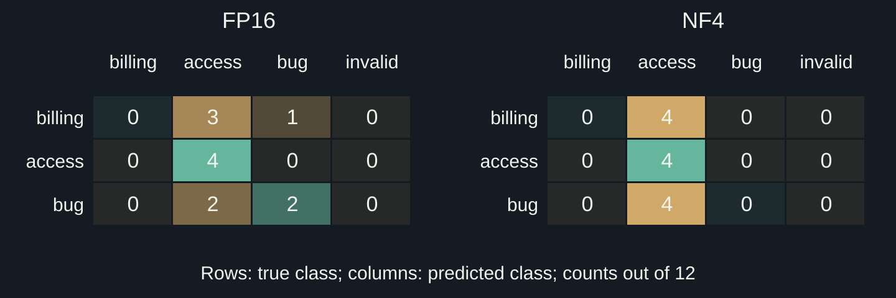
Use the actual result, even if it is inconvenient
Используйте фактический результат, даже неудобный
Recorded v6 Colab T4 · 6 October 2026 · five timing trials per cellЗаписанная v6 на Colab T4 · 6 октября 2026 · пять таймингов на ячейку| Measured quantity | FP16 | NF4 |
|---|---|---|
| 24-token median | 772.14 ms | 1116.31 ms |
| 96-token median | 2682.29 ms | 4842.87 ms |
| Peak allocated | 963.70–964.54 MiB | 470.96 MiB |
| Peak reserved | 1220 MiB | 1252 MiB |
| Correct tickets | 6 / 12 · 0 invalid | 4 / 12 · 0 invalid |
Student evidence and decision
Свидетельства студента и решение
Short memo · detailed answers in attachmentsКороткая записка · подробности в приложениях| ArtifactАртефакт | Minimum contentsМинимальное содержимое |
|---|---|
| Edited notebookПравленный ноутбук | Tested code, predictions, method answers and plot readingsПротестированный код, предсказания, ответы по методу и прочтение графиков |
| Layer evidenceСвидетельства слоя | Frozen choices, held-out JSON and saved distributions/scatterЗафиксированные выборы, held-out JSON и сохранённые распределения/скаттеры |
| GPU evidenceGPU-свидетельства | Raw attempt, frozen rule/results and timing/confusion plotsСырая попытка, зафиксированные правило/результаты и графики таймингов и ошибок |
| Half-page memoЗаписка на полстраницы | Checked prediction, conditional decision, limit and next testПроверенное предсказание, условное решение, граница и следующий тест |
Borrow the learning pattern, not the workload size
Заимствуйте учебный паттерн, а не размер нагрузки
Core sources and optional continuationОсновные источники и необязательное продолжение- bitsandbytes · actual four-bit layersbitsandbytes · настоящие четырёхбитные слои
- PyTorch · allocator counters and asynchronous workPyTorch · счётчики аллокатора и асинхронная работа
- MIT EfficientML · controlled changes and negative controlsMIT EfficientML · контролируемые правки и негативные контроли
- CMU Deep Learning Systems · short implementation steps and testsCMU Deep Learning Systems · короткие шаги реализации и тесты
- GPU Puzzles · small executable exercisesGPU Puzzles · небольшие исполняемые упражнения
Required: AWQ/GPTQ mechanisms. Optional: full implementations, FP8 and custom kernels.
Обязательно: механизмы AWQ/GPTQ. Опционально: полные реализации, FP8 и кастомные ядра.

The smaller representation must still satisfy the task. Keep the evidence that explains your choice.
Уменьшенное представление всё ещё должно решать задачу. Сохраните свидетельства, объясняющие ваш выбор.
Now serve the candidate.Теперь кандидат — в сервис.
Topic 04: start one vLLM process and verify its HTTP behavior. Quantization evidence is an input, not a substitute for a service test.
Тема 04: запустите один процесс vLLM и проверьте его HTTP-поведение. Свидетельства квантования — вход, а не замена сервисного теста.